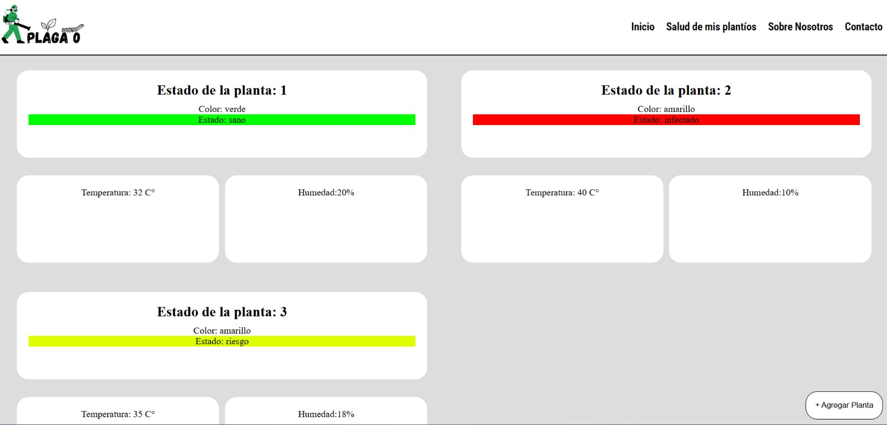
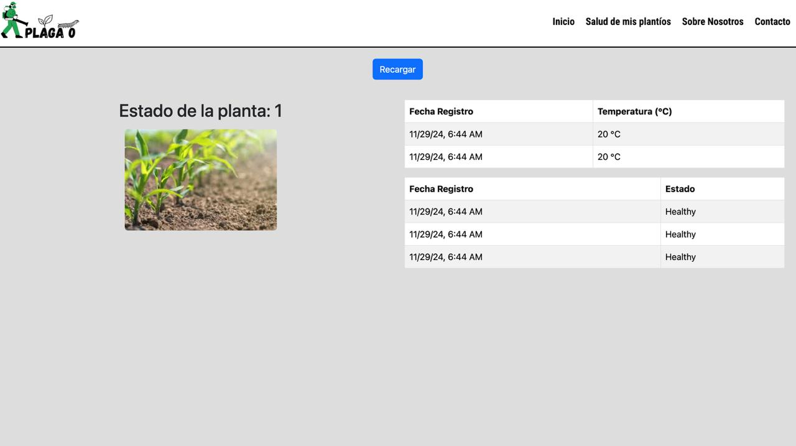
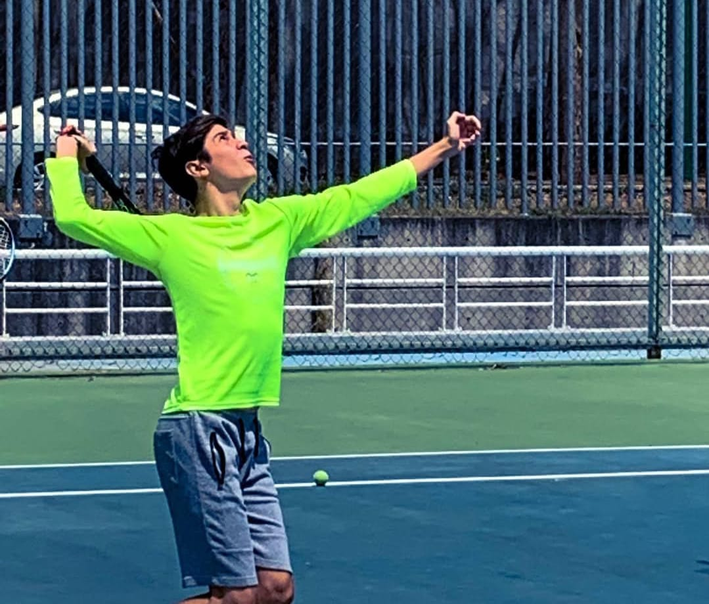

Emiliano Duran Fuentes -A01638902
Explorando Mi Perfil como Desarrollador
Lista de Contenidos:
- ...... Formacion Y Aprendizaje
- ...... Experiencia y Especialización
- ...... Forma de Trabajar y Mentalidad
- ...... Tecnología y Tendencias
- ...... Un Toque Personal
1-. Mi Formacion y Aprendizaje
-
¿Cuál fue el motivo que elegiste desarrollo de software?
- La razón por la que decidí estudiar desarrollo de software fue porque me di cuenta de que me apasiona la tecnología y la lógica que existe detrás de todo eso, me gusta enfrentar retos que me conlleven a pensar en una solucion y resolverlo usando las herramienas que conozco, en este caso la programación
-
¿Cuál fue la materia o proyecto más desafiante en tu formación y cómo lo superaste?
- La materia más desafiante relacionada a mi carrera y hasta la fecha, ha sido la de Internet Of Things, pues fue mi primer acercamiento a una tecnología capaz de comunicarse con otras maquinas como lo fue la raspberry pi además de aprender herraminetas nuevas como Bases de Datos, como equipo nos enfrentamos a distintos retos para que se pudiera concretar el proyecto, lo más dificl fue el tiempo, y la implementacion de las comunicaciones entre dispositivos.
-
¿Qué habilidades crees que son esenciales en la educación de un desarrollador y por qué?
- Sin duda creo que saber trabajar en equipo es escencial para la formación y cumplimiento de proyectos, pues el desarrollo de software suele estar pensado para hacerlo en equipo. También creo que un buen razonamiento y uso de lógica son necesarios para enfrentar los problemas dia a dia.
2-. Experiencia y Especialización
-
¿En qué área del desarrollo de software trabajas actualmente o te gustaría trabajar (frontend, backend, DevOps, IA, ciberseguridad, etc.) y por qué
- Actualmente estoy muy familiarizado con la parte del frontend y backend. Mi interés nació de crear un sitio web para un proyecto personal, primero me interesé por el frontend, y una vez dominando, me fui a aprender el backend y empezar mis proyectos personales.
-
¿Has trabajado en algún proyecto que te haya marcado o del que estés especialmente orgulloso? Cuéntanos sobre él
- Un proyecto por el cual estoy orgulloso, es uno con el que estoy trabajando actualmente, se trata de un ecommerce de ropa, donde hago diseños propios y los subo a mi plataforma, la razón por la que estoy orgulloso es porque estoy aplicando todo lo que sé para hacerlo posible, hago llamadas a la api de la empresa que imprime los diseños (para acceder a los mockups, stock, diseños etc) y generando el display de los datos de una manera dinamica, aplicando conocimientos de front y backend

-
Si pudieras aprender una nueva tecnología o lenguaje este año, ¿cuál sería y por qué?
- Me gustaría aprender mas a profundidad muchos frameworks como angular o react, para seguir expandiendo mis conocimientos y aprovecharlos para mis proyectos de la vida cotidiana
3-. Forma de Trabajar y Mentalidad
-
¿Eres más de trabajo en equipo o prefieres trabajar solo? ¿Por qué?
- Soy más de trabajo en equipo, porque pienso que un problema se resuelve mejor intercambiando ideas y pensamientos, y no cerrarse a lo que uno personalmente piensa.
-
¿Cómo manejas los errores o bugs en tu código? ¿Tienes alguna estrategia personal para resolver problemas?
- Trato de darle una solución inmediata, si el problema persiste, me gusta tomarme un espacio, escuchar música, salir al aire libre, y eventualmente la solucion llega a mi mente despejandola un poco.
-

-
¿Cuál es tu filosofía cuando trabajas en código de otros? (Ejemplo: ¿Prefieres refactorizar todo, respetar la estructura inicial, proponer cambios graduales?)
- Trato de respetar la estructura inicial, entenderlo y analizarlo, es hasta después que suelo sugerir mejoras, cambios o cuestiones que crea convenientes, todo sin hablar mal del trabajo de nadie.
4-. Tecnología y Tendencias
-
¿Qué herramienta, librería o framework descubriste recientemente y te sorprendió?
- Angular sin dudas me sorpendió trás entender su facilidad de uso y su alta gama de herramientas que facilitan el desarrollo, como lo es angular material, la creacion de componentes, el uso de typescript, su estructura es clara y se hace de forma más organizada
-
Ejemplos de mi trabajo hecho con angular:


-
¿Sigues alguna fuente de información sobre tecnología (blogs, podcasts, newsletters, canales de YouTube)? ¿Cuáles recomiendas?
- Si me mantengo informado leyendo documentaciones y actualizaciones de algunos lenguajes de programación como JavaScript o PHP, y una herramienta que recomiendo sobre todo para el aprendizaje es la de udemy, debido a la cantidad grande de ramas de aprendizaje y su costo muy accesible
- Link a Udemy
-
¿Qué tendencia en tecnología crees que cambiará la industria en los próximos 5 años?
- La tendencia apunta claramente hacia el uso de la inteligencia Artificial para aplicaciones de software y otras cuestiones, no creo que sea malo pues como todo sería una herramienta más a utilizar para facilitar el trabajo y aumentar el nivel y optimización de los mismos.
5-. Un Toque Personal
-
¿Qué actividad o hobby fuera de la programación disfrutas y cómo crees que influye en tu forma de resolver problemas?
- Disfruto mucho el deporte y los videojuegos, sobre todo el futbol y el tenis, siento que mi manera de resolver problemas se ve directamente relacionada con el hecho de pensar rápido, además de informarme, veo y analizo jugadas, a mis rivales y aprendo de aquellos que tienen algo por enseñarme.
-

-
Si no fueras desarrollador(a), ¿a qué te dedicarías?
- Probablemente hubiera optado por estudiar uns psicología, pues es mucho de mi interés cuestiones filosóficas pero sobre todo conocer como es que funciona la manera de pensar de las personas
-
Comparte una frase, lema o enseñanza que te haya inspirado en tu vida o carrera.
- "Al Final, todo estará bien.. y si no está bien no hemos llegado al final"